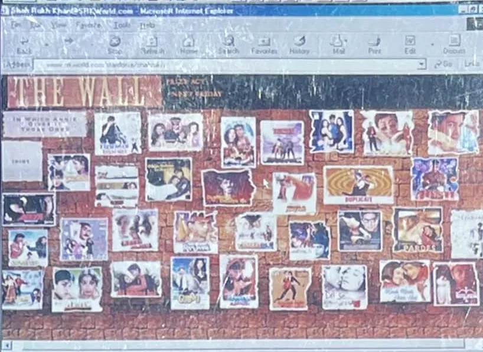

Chapter 5
The Wall · Films, 1992 to 1998: the villain who became the lover

SRKWorld.com, 2000: "The Wall", his films as posters on a brick wall. (Archive: the author's collection)
A country opening up. He arrived in Bombay in the year India changed course. In July 1991 the government began dismantling the licence raj and opened the economy. On 2 October 1992 Zee TV went on air as the country's first private Hindi satellite channel, and Doordarshan's monopoly on the evening was over. (Fact. Wikipedia: Zee TV; WION) A new middle class was about to discover brands, satellite channels and itself. It needed a new kind of hero, one who looked like it: urban, quick, self-made, a little dangerous. Interpretation
1992: four films in one year. The first film he signed was Hema Malini's Dil Aashna Hai; he was shooting it by June 1991. (Fact. Wikipedia: Shah Rukh Khan) But the first to reach cinemas was Deewana, released in June 1992, in which he was the second male lead to Rishi Kapoor, opposite Divya Bharti. It was a hit and won him the Filmfare Award for Best Male Debut. Fact Chamatkar, Dil Aashna Hai and Raju Ban Gaya Gentleman followed the same year, his first films as the lead. Raju Ban Gaya Gentleman, directed by Aziz Mirza from the Circus days, began a long screen partnership with Juhi Chawla. Fact On television he was still working too: Mani Kaul's Idiot aired in 1992. Fact
Critics noticed the energy before the craft. One later described the early Khan "sliding down stairs on a slab of ice, cartwheeling, somersaulting". Fact. Arnab Ray, DNA, quoted in Wikipedia He was not the most polished actor in the room. He was the one you could not stop watching. Interpretation
1993: the anti-hero. Then he did what no aspiring romantic hero did. He played villains. In Baazigar, directed by Abbas–Mustan, he was a murderer and an ambiguous avenger. It was a hit, his first film with Kajol, and it won him his first Filmfare Award for Best Actor. In Darr, his first film with Yash Chopra and Yash Raj Films, he was an obsessive lover stalking Juhi Chawla, and the stammered "I love you, K-k-k-Kiran" passed into everyday speech. Darr was also a hit, and earned him a nomination for Best Performance in a Negative Role. Fact. Wikipedia In the same year Maya Memsaab ran into the censors over a nude scene; he avoided such scenes afterwards. Fact
The convention of the time was simple: the hero is good, the villain is someone else. Khan collapsed the two. Audiences who should have recoiled from the stalker and the killer cheered for them, because he played them as wounded men rather than monsters. Interpretation
1994: the actor's actor. Anjaam, opposite Madhuri Dixit, gave him another obsessive role and the Filmfare Award for Best Performance in a Negative Role. Kabhi Haan Kabhi Naa, Kundan Shah's small film about a lovable loser, won him the Filmfare Critics Award for Best Performance. He has called it his favourite role. Fact. Wikipedia Kundan Shah had co-directed Circus. Once again, the people who backed him on television were the ones who gave him his best early work. Interpretation The director Mukul S. Anand called him "the new face of the industry". Fact. quoted in Wikipedia
1995: the year that never ended. He had seven releases in 1995. Karan Arjun, directed by Rakesh Roshan, with Salman Khan and Kajol, was the second-highest-grossing film of the year in India. Fact The highest was Dilwale Dulhania Le Jayenge, Aditya Chopra's debut as a director, released on 20 October 1995. (Fact. Wikipedia: DDLJ)
DDLJ was made on a budget of about ₹4 crore. It grossed about ₹102.5 crore worldwide according to one estimate, ₹89 crore of it in India; another source puts its worldwide total near ₹200 crore by 1996. Fact. Wikipedia: DDLJ, citing Times Now, 20 Oct 2022, and other sources; the figures differ by source and date It won ten Filmfare Awards, a record at the time, including his second for Best Actor, and the National Film Award for Best Popular Film Providing Wholesome Entertainment. Fact
It was the first Hindi blockbuster with non-resident Indians as its main characters. It helped turn the diaspora into a market studios could bank on, ran for more than a year in the United Kingdom, and started a trend of films shot abroad for audiences abroad. Fact. Wikipedia: DDLJ Raj, the NRI boy who would not elope but waited for the father's blessing, gave a generation living between two countries a hero who belonged to both. Interpretation
At Mumbai's Maratha Mandir it has screened daily since 20 October 1995. It overtook Sholay as the longest-running film in Indian cinema in 2001 and reached 1,000 weeks in December 2014. Fact. Wikipedia: DDLJ; CNN, 2015 When the cinema announced in February 2015 that the run would end after 1,009 weeks, fans protested and the run was reinstated. It had reached 1,251 weeks by March 2020, paused for the lockdown, and resumed in November 2020. Fact. Wikipedia: DDLJ No marketing department kept that film alive. Its audience did. Interpretation
1996: the fall. All four of his releases in 1996 failed, critically and commercially. Fact The rise had not been a straight line, and the industry that had crowned him a year earlier began to ask whether the moment had passed. Interpretation
1997: the comeback, and the first son. Yes Boss, again with Aziz Mirza and Juhi Chawla, earned a Best Actor nomination. Pardes, directed by Subhash Ghai, cast him as Arjun, a musician, and was among the first major Hindi films to succeed in the United States. Dil To Pagal Hai, his second film with Yash Chopra, won him his third Filmfare Award for Best Actor. Fact. Wikipedia That year he also performed on stage abroad, in Asha Bhosle's Moments in Time concert in Malaysia. Fact
On 13 November 1997 his first child, Aryan, was born. (Fact. Wikipedia: Aryan Khan) Three years later he named his first technology company after him. Eyewitness account; see Chapter 6
1998: Dil Se and Kuch Kuch. Duplicate, a double role for Mahesh Bhatt and his first film with Dharma Productions, was poorly received. Fact Dil Se.., directed by Mani Ratnam and released on 21 August 1998, cast him as an All India Radio correspondent drawn to a woman who turns out to be a suicide bomber. Its song "Chaiyya Chaiyya" was shot on the roof of a moving train on the Nilgiri line. (Fact. Wikipedia: Dil Se..) At home it was only an average grosser, about ₹28.4 crore on a ₹11.5 crore budget. Abroad it became the first Indian film to enter the UK top 10, earned about $975,000 in the United States, and won the NETPAC Award at the Berlin International Film Festival. Fact. Wikipedia: Dil Se..
Two months later, on 16 October 1998, came Karan Johar's debut, Kuch Kuch Hota Hai. It was the highest-grossing Hindi film of 1998 in India: about ₹80 crore at home and about $6.3 million abroad, roughly ₹107 crore worldwide on a ₹10 crore budget. (Fact. Box Office India, via Wikipedia: Kuch Kuch Hota Hai) It became the second Bollywood film in the UK top 10, after Dil Se.., won eight Filmfare Awards and the National Award for Best Popular Film, and won him the Filmfare Best Actor award for the second year running. Fact The same year he toured the UK, Canada and the US with Juhi Chawla, Akshay Kumar and Kajol in The Awesome Foursome. Fact
By the end of 1998 the pattern was set. The films travelled, and he went with them, on stage, in person, to the audiences who had found him first on video cassettes and satellite channels. The diaspora was not an afterthought to his career. It was half of it. Interpretation
The three films that built the wall, in numbers
| Measure | Baazigar (1993) | Dilwale Dulhania Le Jayenge (1995) | Kuch Kuch Hota Hai (1998) |
|---|---|---|---|
| Released | 12 November 1993, Diwali | 20 October 1995 | 16 October 1998, Diwali |
| Director | Abbas–Mustan | Aditya Chopra | Karan Johar |
| Reported budget | ₹3 crore | ₹4 crore | ₹10 crore |
| Gross | ₹32 crore in India | ₹102.5 crore worldwide (about ₹1,115 crore at today's prices, as estimated) | about ₹106.7 crore worldwide (₹80.12 crore India, ₹26.61 crore overseas) |
| Filmfare awards won | 4, including his first Best Actor | 10, then a record for one film | 8, including Best Film, Director, Actor and Actress |
| What it proved | A villain could be the hero | The diaspora was a market | The overseas market could be counted in millions of dollars |
(Fact. Wikipedia: Baazigar; Wikipedia: Dilwale Dulhania Le Jayenge; Wikipedia: Kuch Kuch Hota Hai, October 2026; the last row is Interpretation)
Gross against budget. Baazigar returned about ten times its budget in India alone; DDLJ about 25 times worldwide; Kuch Kuch Hota Hai about 10 times. Fact, this book's arithmetic from the table; gross is not profit Kuch Kuch Hota Hai was the first Bollywood film to pass US$5 million overseas, and the second, after his own Dil Se.. earlier that year, to enter Britain's box-office top ten. (Fact. Wikipedia: Kuch Kuch Hota Hai) Both of the first two Hindi films in the UK top ten were his. Fact, as above
The longest run. DDLJ overtook Sholay as the longest-running film in Indian cinema in 2001, passed 1,000 weeks at Mumbai's Maratha Mandir in December 2014, survived an announced end in February 2015 after fans protested, and had reached 1,251 weeks by March 2020. (Fact. Wikipedia: DDLJ) [Unverified: whether it is still showing in October 2026, and the current week count, from the cinema.] It was a fan campaign before the word existed: the audience kept a film alive for a quarter of a century. Interpretation; see Chapter 21
The brands followed him, and so did their risks. In 1998 Hyundai, a carmaker almost unknown in India, launched the Santro with him as its face. He was hesitant to lend his name to a brand few had heard of. The partnership became one of the longest in Indian advertising, about 26 years by 2024, and Hyundai became the country's second-largest carmaker. (Fact. Storyboard18)
Open arms on a mustard field. The sur, the note everyone hummed. The myth that KING now plays against was written in these six years. Interpretation